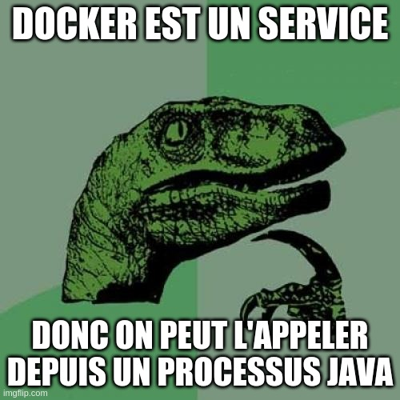

BBL Testcontainers - Adelean - 2020
La préhistoire
- Embedded MongoDB
- H2 / HSQL
La préhistoire... et ses reliquats
- Solutions hétérogènes pour les services (plusieurs librairies)
- Certaines étaient embarquées (JVM) / Les autres étaient les processus externes
- Start / stop / cleanup manuel
Naissance des Testcontainers
Testcontainers sont les instances lègeres et jétables
- Pas d'installation des services pour les tests
- Pas de bases des données embarquées
- Démarrage rapide
- Nettoyage automatique
Les Testcontainers est une extention de JUnit
@Testcontainers
class ExampleTestWithElasticsearch {
@Container
ElasticsearchContainer container =
new ElasticsearchContainer("docker.elastic.co/elasticsearch/elasticsearch:6.5.4");
@Test
public void exampleTest() {
container.getHttpHostAddress();
//...
}
}
Les scopes des Testcontainers
Scopes - container partagé
@Testcontainers
class ExampleTestWithElasticsearch {
@Container
static ElasticsearchContainer container =
new ElasticsearchContainer("docker.elastic.co/elasticsearch/elasticsearch:6.5.4");
RestHighLevelClient client;
@BeforeEach
public void init() {
/* We get Elasticsearch host-port */
String httpHostAddress = container.getHttpHostAddress();
RestClientBuilder clientBuilder = RestClient.builder(HttpHost.create(httpHostAddress));
client = new RestHighLevelClient(clientBuilder);
}
@Test
public void exampleTest1() { /* ... */ }
@Test
public void exampleTest2() { /* ... */ }
}
Scopes - container singleton
/* Attention! Don't add annotation @Testcontainers nor @Container */
abstract class AbstractElasticsearchTest {
static ElasticsearchContainer container =
new ElasticsearchContainer("docker.elastic.co/elasticsearch/elasticsearch:6.5.4");
static {
container.start();
}
}
class ExampleTestWithElasticsearch extends AbstractElasticsearchTest {
RestHighLevelClient client;
@BeforeEach
public void init() {
/* We get Elasticsearch host-port */
String httpHostAddress = container.getHttpHostAddress();
RestClientBuilder clientBuilder = RestClient.builder(HttpHost.create(httpHostAddress));
client = new RestHighLevelClient(clientBuilder);
}
@Test
public void exampleTest() { /* ... */ }
}
Scopes - contrôle manuel du cycle de vie
ElasticsearchContainer container =
new ElasticsearchContainer("docker.elastic.co/elasticsearch/elasticsearch:6.5.4");
container.start();
//...
container.stop();ou
try (ElasticsearchContainer container =
new ElasticsearchContainer("docker.elastic.co/elasticsearch/elasticsearch:6.5.4")) {
container.start();
// Stop is called by try-with-resources
}
Ryuk
Ryuk
Modules
- Elasticsearch
- Kafka
- MySql
- RabbitMq
- etc...
Modules - Elasticsearch
ElasticsearchContainer container =
new ElasticsearchContainer("docker.elastic.co/elasticsearch/elasticsearch:6.5.4");
Modules - Kafka
KafkaContainer kafkaContainer = new KafkaContainer();
kafkaContainer.start();
/* Get Kafka bootstrap servers for client */
kafkaContainer.getBootstrapServers();ou avec Zookeeper externe
KafkaContainer kafkaContainer = new KafkaContainer().withExternalZookeeper("localhost:2181");
Container custom
@Container
GenericContainer redis = new GenericContainer<>("redis:5.0.3-alpine")
.withExposedPorts(6379);
Spring Boot + Testcontainers
Configuration Spring Boot
# application.yml
spring:
data:
elasticsearch:
cluster-name: my-cluster
cluster-nodes: localhost:9200
Configuration Spring Boot avec les variables
# application.yml
spring:
data:
elasticsearch:
cluster-name: ${es.cluster}
cluster-nodes: ${es.host}
Ordre de lancement
- Lancer Bootstrap context
- Lancer Testcontainers
- Injecter les variables dans Properties Source
- Lancer Application context
public class ElasticsearchBootstrapConfig {
@Bean(destroyMethod = "stop")
public ElasticsearchContainer elasticsearchContainer(ConfigurableEnvironment environment) {
ElasticsearchContainer container =
new ElasticsearchContainer("docker.elastic.co/elasticsearch/elasticsearch:6.5.4");
container.start();
/* Set values of variables that will become available in application.yml */
MapPropertySource propertySource = new MapPropertySource(
"testElastic", ImmutableMap.of(
"es.cluster", "docker-cluster",
"es.host", container.getHttpHostAddress()));
environment.getPropertySources().addFirst(propertySource);
return container;
}
}Cette configuration doit être déclarée dans le fichier META-INF/spring.factories
org.springframework.cloud.bootstrap.BootstrapConfiguration=\
io.hosuaby.bbltestcontainers.ElasticsearchBootstrapConfig
Lancez les tests!
@SpringBootTest
class BblTestcontainersApplicationTests {
@Test
void contextLoads() {
}
}